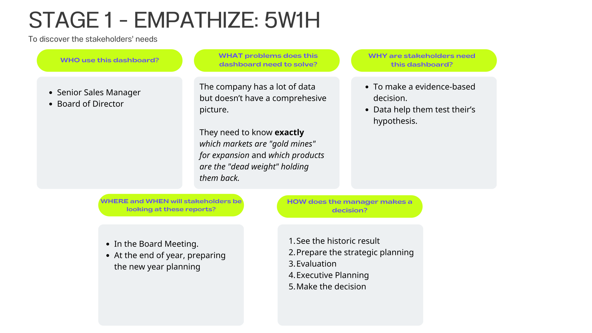
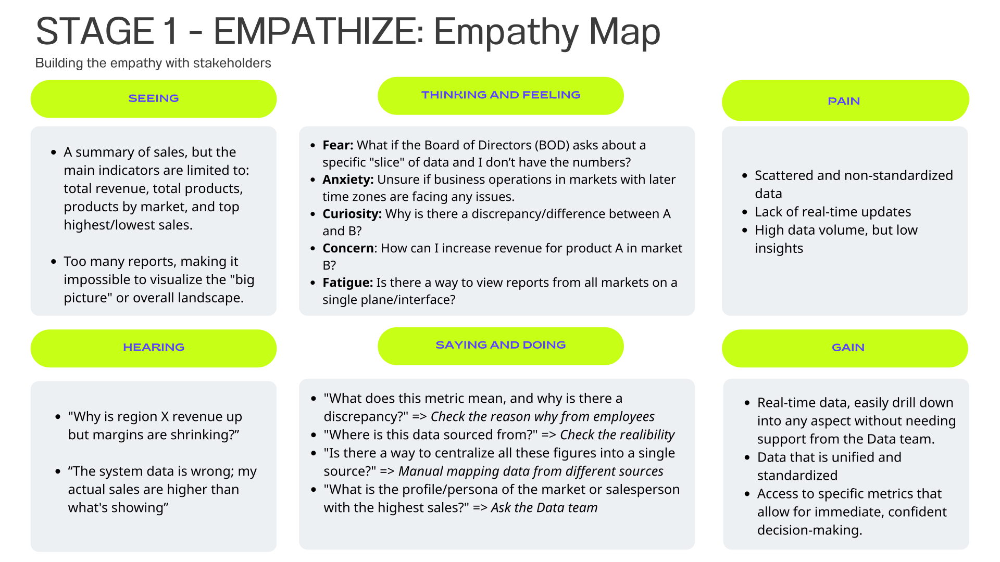
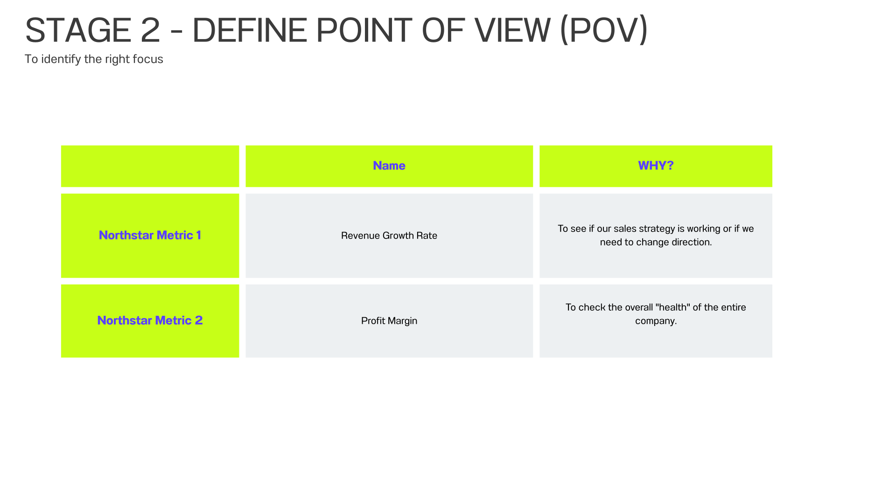
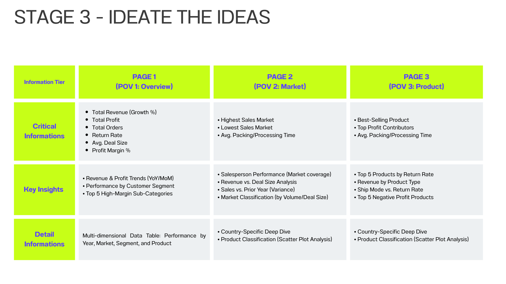

Global Sales Performance Dashboard
An interactive Power BI analysis driving strategic decisions on market expansion and margin optimization.
Executive Summary
Superstore, a rapidly growing global retail company, is actively seeking to expand its market share across multiple continents. This project involves analyzing their comprehensive sales dataset—encompassing transactions, regional personnel, and product returns—to provide a clear picture of their current overall business performance. The resulting dashboard empowers senior management to make data-driven decisions on targeted market expansion and strategic product positioning.

Business Challenge
To support Superstore's ambitious growth and market expansion goals, senior management needed actionable insights into their global operations. In its current state, the company lacked a unified view of its fragmented international data. The primary objective of this project was to analyze the raw data and answer three critical strategic questions:
- Overall Performance: What is the current state of the business in terms of revenue, profitability, and general growth trends?
- Market Analysis: How are different geographic markets performing, and where are the most promising opportunities for strategic expansion?
- Product Strategy: Which product categories and sub-categories are driving success, and what products should the company focus on strategically?
My Approach
To build a practical and effective dashboard, I applied principles from Stanford's Design Thinking process, walking through the problem from the perspective of a business manager:
Design Thinking
Step 1. Empathize
Identify the stakeholder's goals and understand the underlying business problems.
 Step 2. Define
Clearly define the core questions and metrics the dashboard must address.

Step 3. Ideate
Brainstorm data visualization layouts and key elements to display.
Step 4. Prototype & Step 5. Test
Continuously prototype and test.
Data Preparation & Modeling
1. Data Transform with Power Query
Since the raw dataset was relatively clean, my primary focus during the ETL process was not deep cleaning, but rather shaping the data architecture. Key transformations included:
- Deconstructing the main flat file into a structured schema with a
central
Fact_Ordertable and distinct Dimension tables. - Merging related queries to reduce redundancy and improve data integrity.
- Generating a dedicated Dim_Date table to enable comprehensive time-intelligence analysis.
2. Building the Data Model
I implemented a robust Star Schema. The central
Fact table (Fact_Order) records transactional data, and it is linked via
one-to-many relationships to multiple Dimension tables (such as Dim_People,
Dim_Return, Dim_Customer, Dim_Product,
Dim_Region, and Dim_Date). This optimized architecture ensures
efficient filtering and high real-time performance on the dashboard.
Visualizations
How to Use This Dashboard
- Optimal Viewing: Click the Fit to page icon or the Full screen arrows at the bottom right corner of the dashboard for the best experience.
- Exploration: Navigate between the core pages (Overview, Market, Product) using the top buttons or bottom pagination to explore different analytical perspectives.
- Interaction: Use the side dropdowns to filter data, toggle metric buttons to change chart views, click on any chart element to cross-filter the entire page, and hover over data points to reveal detailed tooltips.
Key Insights & Recommendations
Key Insights
1. Profit Margins are Dropping Despite Revenue Growth
Although revenue and total profit have grown by over 20% for three consecutive years, the overall Profit Margin has actually dropped by 1.9%. This suggests that operating costs are rising faster than sales, which could lead to tighter margins as we continue to expand.
2. Canada is a High-Potential Market
While the EMEA and Africa markets
generate similar sales (~$800K), Africa is twice as profitable.
More importantly, Canada stands out as a highly lucrative market. It
has shown steady growth for 4 consecutive years and boasts an exceptionally high
profit margin of ~26%.
3. The Contrast in Product Profitability
Office Supplies deliver the best return on
investment, especially low-cost items like Paper which have a
24% profit margin. On the other hand, Tables (under
Furniture) are losing money with a -12.5% margin (as of 2014),
which drags the entire Furniture category's profitability down to just
7%.
Strategic Recommendations
- Expand in Canada: Take advantage of Canada's strong 3-year performance and high margins. We can optimize shipping costs by using our existing US logistics hubs near the border. Sales efforts should focus on the highly profitable Corporate and Consumer segments.
- Push High-Margin Office Supplies: Allocate more
marketing and warehouse space to
Office Supplies. These small products have low production costs but offer much higher margins than bulky items, effectively boosting overall profitability. - Re-evaluate the Furniture Strategy: Consider pausing or reducing
the sales of
Tables. The high cost of shipping and storage combined with negative margins is draining resources. Shifting this focus to high-yield Office Supplies will quickly improve the bottom line.